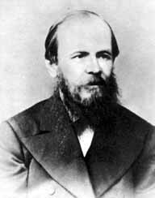

1821, 30 октября (II ноября нового стиля) — Рождение Ф. М. Достоевского.
1831, Покупка М. А. Достоевским, отцом писателя, сельца Дарового и деревеньки Чермашни в Тульской губернии.
1833, Обучение в полупансионе Н. И. Драшусова (Су-шара).
1834, осень — Поступление в частный пансион Л. И. Чермака.
1837, 29 января — Смерть Пушкина, глубоко потрясшая Ф. М. Достоевского.
1837, 27 февраля — Смерть матери Ф. М. Достоевского — М. Ф. Достоевской.
1838, 16 января — Ф. М. Достоевский поступает в Инженерное училище.
1839, июнь — Смерть отца писателя—М. А. Достоевского.
1843, 12 августа — Ф. М. Достоевский оканчивает полный курс наук в верхнем офицерском классе и зачисляется на службу в инженерный корпус при С.-Петербургской инженерной команде.
1844, февраль — Ф. М. Достоевский отказывается от своих наследственных прав на владение землей и крестьянами.
1844, 19 октября — Увольнение от военной службы.
1845, май — Чтение рукописи «Бедных людей» Д. В. Григоровичу.
1845, май — Знакомство с В. Г. Белинским.
1846, 15 января — Выход «Петербургского сборника» с «Бедными людьми» Достоевского.
1846, 28 января — Окончание работы над «Двойником». 1846, весна — Первая встреча с Петрашевским.
1847, зима — весна — Размолвка с Белинским; Достоевский начинает посещать кружок Петрашевского.
1848, 26 мая — Смерть В. Г. Белинского.
1849, 23 апреля — Арест Достоевского по делу Петрашевского.
1849, 22 декабря — Драма на Семеновском плацу.
1850, январь — Свидание с И. Е. Анненковой и Н. Д. Фонвизиной в Тобольском пересылочном пункте.
1850, 23 января — Прибытие в Омский острог. 1854, февраль — Выход из каторги.
1854, 2 марта — Зачисление рядовым в Сибирский 7-й линейный батальон, расположенный в Семипалатинске.
1855, 20 ноября — Производство Достоевского в унтер-офицеры.
1857, 6 февраля — Венчание Достоевского с Марьей Дмитриевной Исаевой в Кузнецке.
1859, февраль — Извещение о разрешении выхода в отставку и запрещении жительства в С.-Петербургской и Московской губерниях.
1859, август — Приезд в Тверь. 1859, декабрь — Переезд Достоевского в Петербург.
1860, 8 июля — Разрешение ф. М. Достоевскому издавать журнал «Время».
1860, 1 сентября — В газете «Русский мир» начали печататься «Записки из мертвого дома».